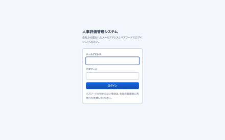
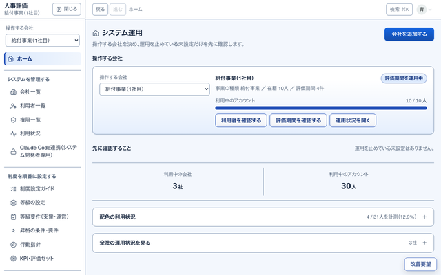
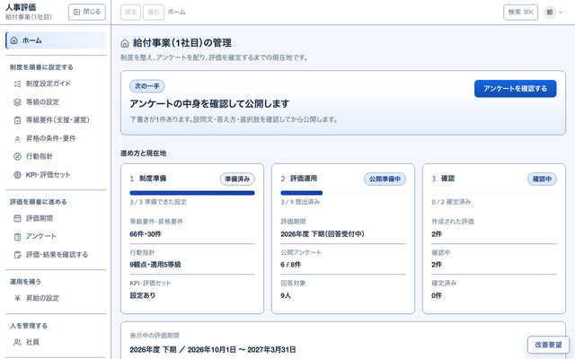
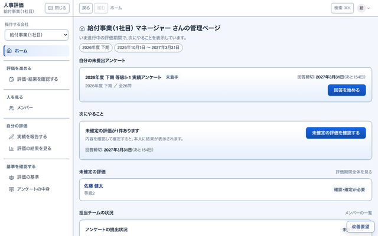
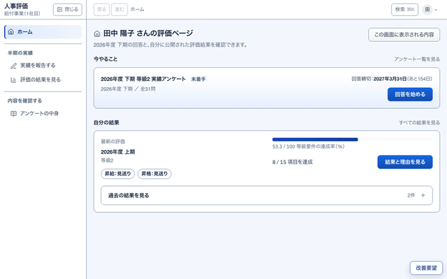

だれでも使う画面ログイン・自分の情報
S01ログインログイン役割のホームへ1S02自分の情報パスワードを変えるS03パスワードの変更S30アンケートの中身開くS31アンケートの中身（1本）S45評価レポート

システム全体管理者ホーム S04 ・ PC
S04システム運用会社を追加するS05会社一覧S06利用者一覧名前S07利用者1人S08権限一覧S09利用状況S10Claude Code連携

会社の管理者ホーム S11 ・ PC
S11管理者のホーム制度準備2S12制度設定ガイドS13等級の設定等級要件へS14等級要件（支援・運営）S15昇格の条件・要件S16行動指針S17KPI・評価セットS18使うKPIを選ぶ次は基準S19選んだ項目の基準を決めるS20全等級区分に共通の設定S21KPI項目S22KPIカテゴリS23昇給の設定S24社員名前S25社員1人S26本人が変更できる項目S27評価期間S28アンケート確認・編集S29アンケートの組み立て回答一覧S36回答一覧S46届いた改善要望開くS47要望1件

マネージャーホーム S37 ・ PC
S37マネージャーのホームS38評価・結果を確認する評価を開くS39評価1件S40メンバー名前S41メンバー1人S42評価の基準

一般の社員ホーム S32 ・ スマホも
3S32社員のホーム回答を始めるS34アンケートに答える提出S35提出した内容S33実績を報告するS43評価の結果を見る評価票S44評価1件（本人）レポートS45 評価レポートへ